CVPR 2026 Workshop
Now
I am building real Visual Intelligence, way beyond language and human perception.
I'm also Kaggle Grandmaster at H2O.ai, and Chief Scientific Advisor at Foundation CIDAUT in Spain working with brilliant students.
2025 Ph.D.
I finished my Ph.D. in Computer Science (summa cum laude) at the University of Würzburg, advised by Prof. Radu Timofte. Dissertation: Photorealistic and Controllable Neural Image Processing. Final Bosses: Ming-Hsuan Yang, Lei Zhang, Jirí Matas.
2022 – 2025
I joined Sony PlayStation, where I was a Computer Vision Scientist on Super-Resolution and AI Graphics Enhancement (like NVIDIA DLSS).
2022 M.Sc.
M.Sc. in Computer Vision from the Autonomous University of Barcelona (UAB), with honours for Real-time Photography Enhancement, advised by Dr. Javier Vazquez-Corral and Prof. Michael S. Brown (Samsung).
2020/21
I worked at Huawei Noah’s Ark Lab (London) and received the best intern award for my work on camera ISPs, supervised by Dr. Eduardo Pérez-Pellitero.
CVPR 2026 Workshop
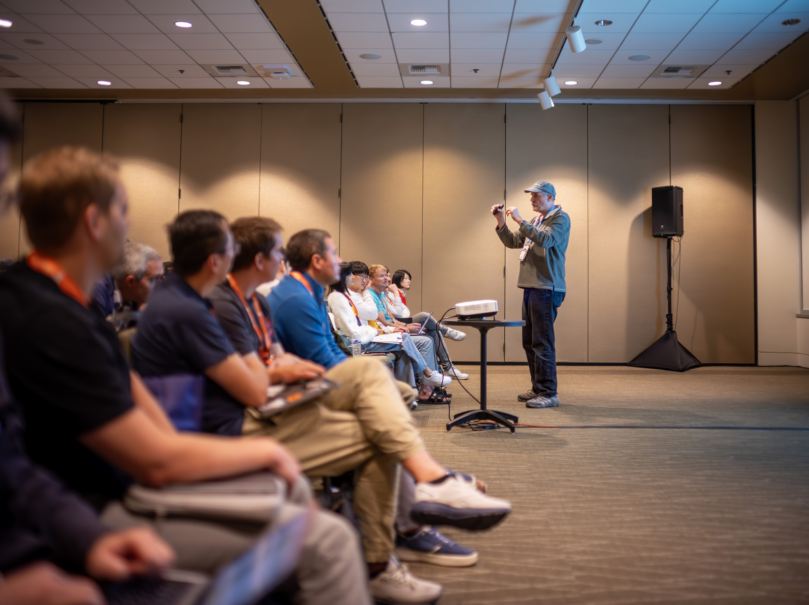
CVPR 2026 Workshop
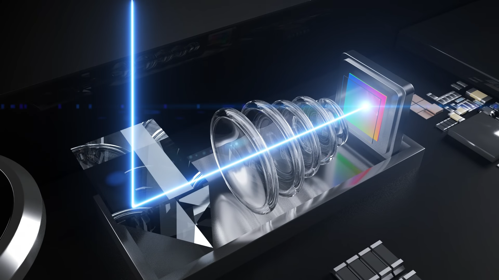
ICCV 2025 Tutorial
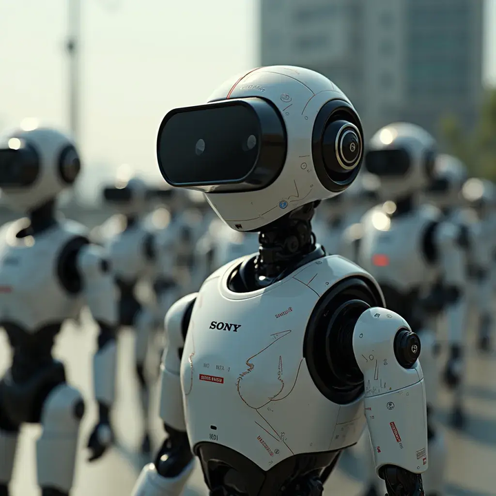
BMVC 2025 Workshop
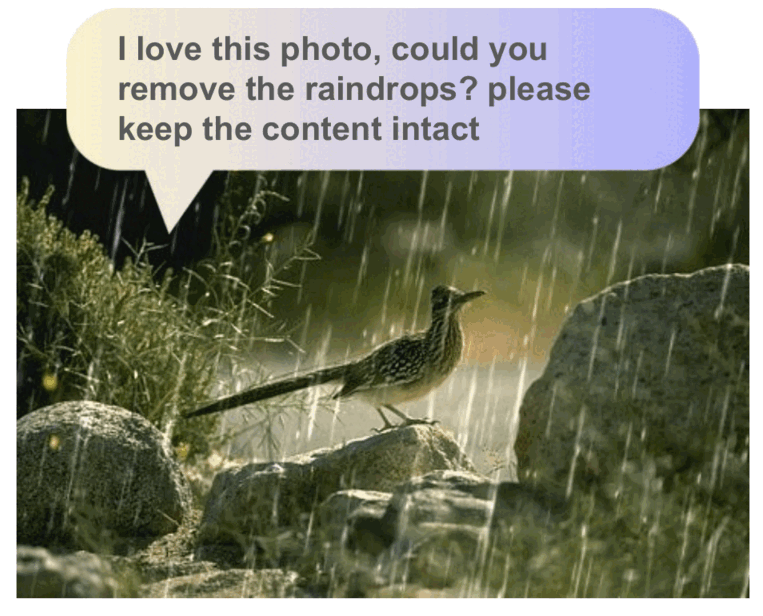
InstructIR ECCV 2024
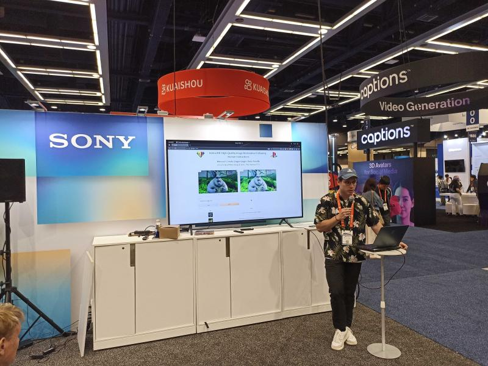
Sony PlayStation
My research aims to achieve real AI Visual Intelligence and Super-human perception. I replace the eyes with cameras and the brain with a computer.
My current research interests include deep learning, low-level computer vision, computational photography, imaging, and vision-language models.
Representative papers are highlighted — check my Google Scholar for the complete list.
|
RealX3D: A Physically-Degraded 3D Benchmark for Multi-view Visual Restoration and Reconstruction
Shuhong Liu, Chenyu Bao, Ziteng Cui, Yun Liu, Xuangeng Chu, Lin Gu, Marcos V. Conde, et al. Project / arXiv / NTIRE 2026 Challenge / Video RealX3D is a real-capture 3D benchmark for restoration and reconstruction under in-the-wild degradations — low-light, blur, occlusion, reflection, etc. |
|
|
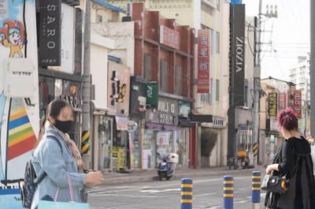 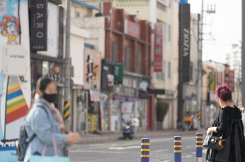 |
Towards Unified Image Deblurring using a Mixture-of-Experts Decoder
Daniel Feijoo, Paula Garrido-Mellado, Jaesung Rim, Álvaro García, Marcos V. Conde Conference on Computer Vision and Pattern Recognition (CVPR), 2026 GitHub / arXiv / Demo 🤗 DeMoE is the first all-in-one deblurring method that restores images with diverse blur types — global motion, local motion, low-light blur, and defocus. |
|
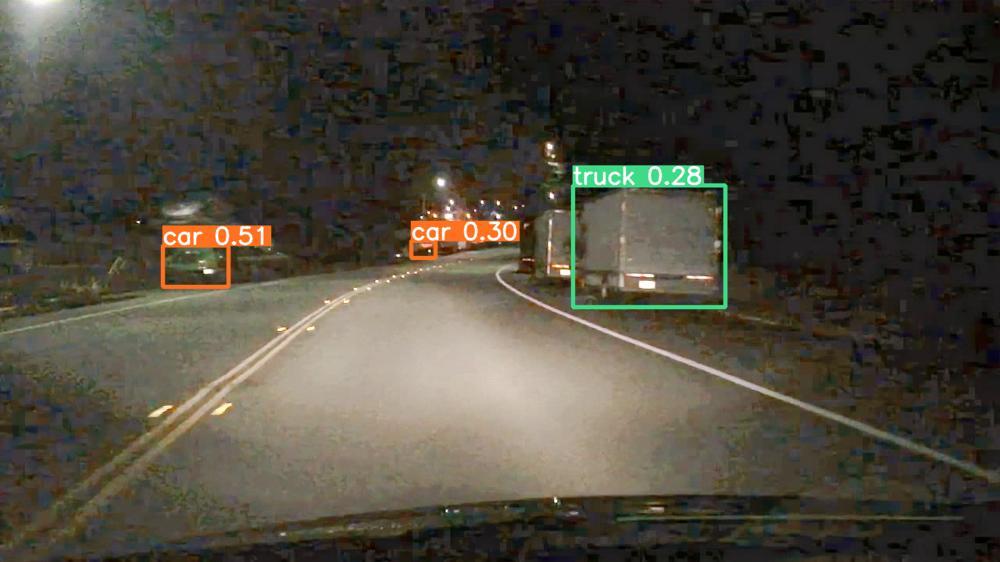 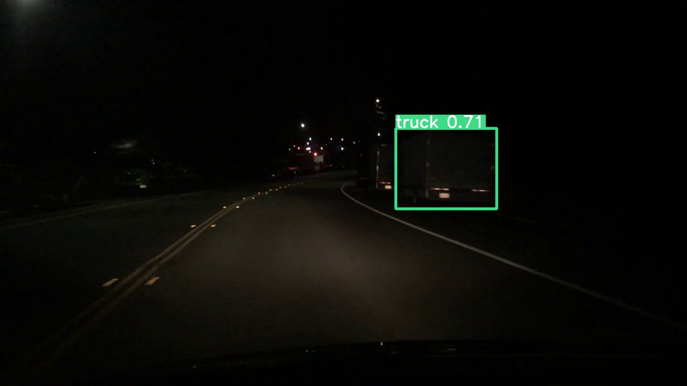 |
FLOL: Fast Baselines for Real-World Low-Light Enhancement
Juan C. Benito, Daniel Feijoo, Álvaro García, Marcos V. Conde arXiv preprint, 2025 arXiv / GitHub Fast and efficient baselines for real-world low-light image enhancement. Process HD videos at 24 FPS. Fastest model in NTIRE challenges. |
|
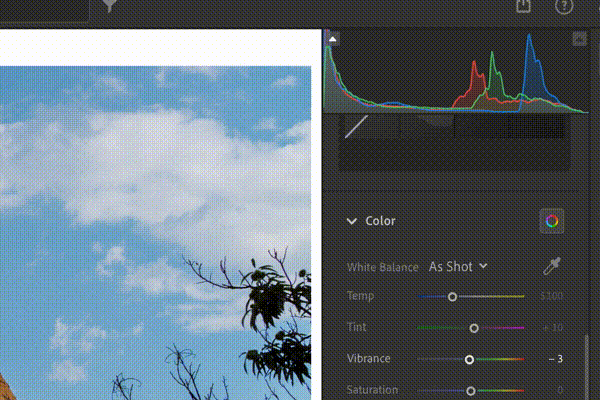 |
PixTalk: Controlling Photorealistic Image Processing and Editing with Language
Marcos V. Conde, Zihao Lu, Radu Timofte International Conference on Computer Vision (ICCV), 2025 Paper / GitHub We propose the first approach that introduces language and explicit control into the image processing and editing pipeline. PixTalk is a vision-language multi-task image processing model, guided using text instructions. Our method is able to perform the most popular techniques in photography. |
|
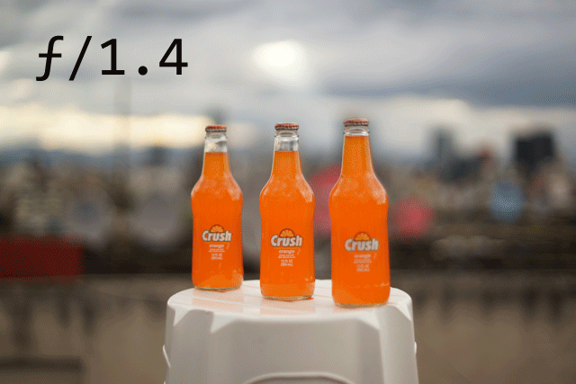 |
Bokehlicious: Photorealistic Bokeh Rendering with Controllable Apertures
Tim Seizinger, Florin-Alexandru Vasluianu, Marcos V. Conde, Zongwei Wu, Radu Timofte International Conference on Computer Vision (ICCV) , 2025 arXiv, Code and Models upcoming The best Bokeh rendering method using neural networks and a novel dataset. The neural model allows to control the apertur from f/16 to f/1.8 |
|
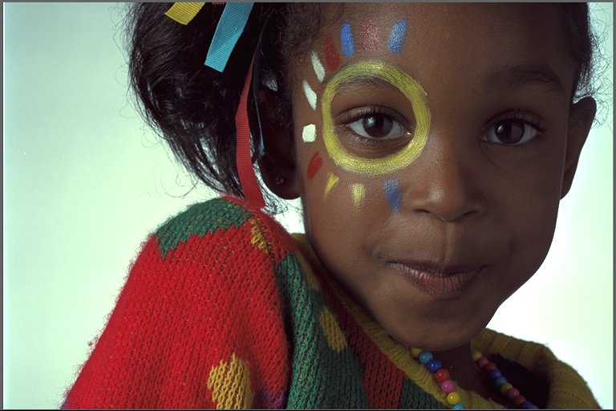 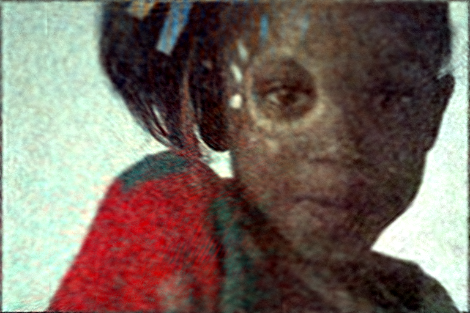 |
Extreme Compression of Adaptive Neural Images
Leo Hoshikawa*, Marcos V. Conde*, Takeshi Ohashi, Atsushi Irie International Conference on Computer Vision (ICCV) Workshop, 2025 arXiv We present a novel analysis on compressing neural fields, with the focus on images. We also introduce Adaptive Neural Images (ANI), an efficient neural representation that enables adaptation to different inference or transmission requirements. |
|
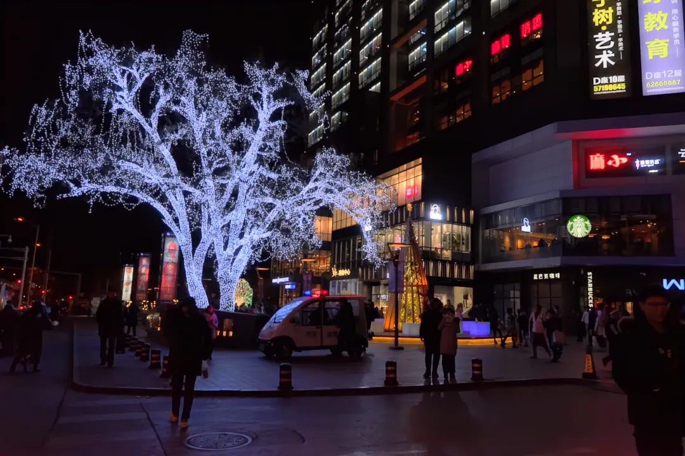 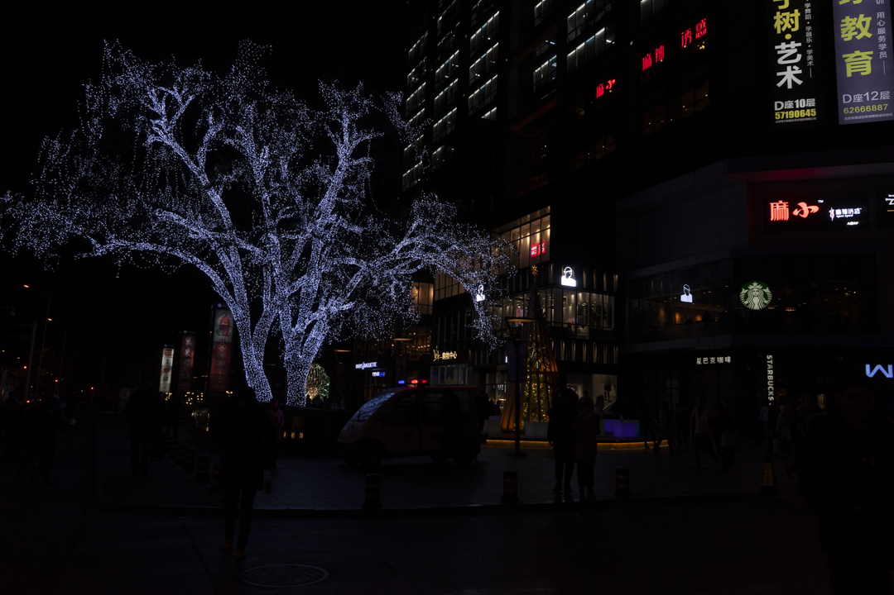 |
DarkIR: Robust Low-Light Image Restoration
Daniel Feijoo, Juan C. Benito, Alvaro Garcia, Marcos V. Conde Conference on Computer Vision and Pattern Recognition (CVPR), 2025 GitHub / arXiv / Demo 🤗 DarkIR In low-light conditions, you have noise and blur in the images, yet, previous methods cannot tackle dark noisy images and dark blurry using a single model. We propose the first approach for all-in-one low-light restoration including illumination, noisy and blur enhancement. |
|
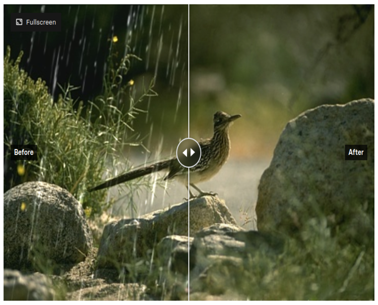 |
InstructIR: High-Quality Image Restoration Following Human Instructions
Marcos V. Conde, Gregor Geigle, Radu Timofte European Conference on Computer Vision (ECCV), 2024 project page / GitHub / arXiv / Video / Twitter X / Demo 🤗 InstructIR takes as input a degraded image and a human-written instruction for how to improve that image. The (single) neural model performs all-in-one image restoration. We achieve state-of-the-art results on several restoration tasks including image denoising, deraining, deblurring, dehazing, and (low-light) image enhancement. |
|
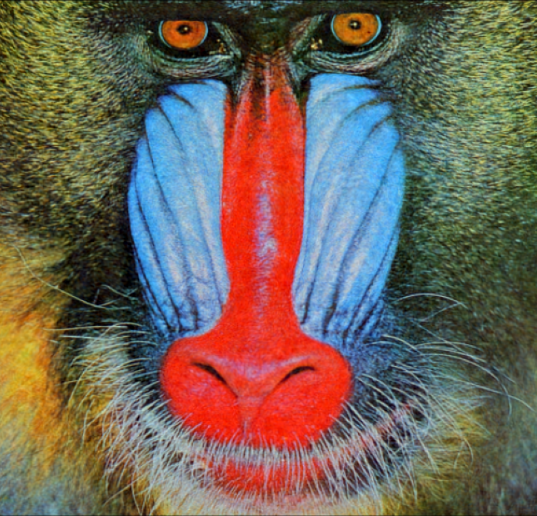 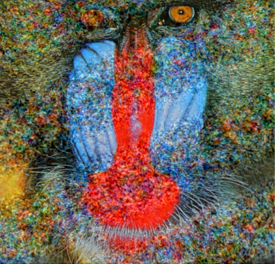 |
Streaming Neural Images
Marcos V. Conde, Andy Bigos, Radu Timofte IEEE International Conference on Image Processing (ICIP), 2024 arXiv Implicit Neural Representations (INRs) are a novel paradigm for signal representation that have attracted considerable interest for image compression. We explore the critical yet overlooked limiting factors of INRs, such as computational cost, unstable performance, and robustness |
|
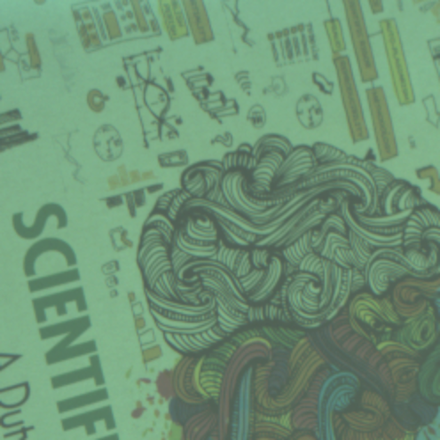 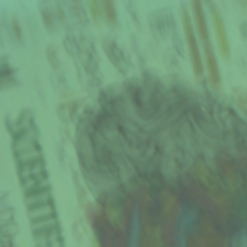 |
Toward Efficient Deep Blind RAW Image Restoration
Marcos V. Conde, Florin Vasluianu, Radu Timofte IEEE International Conference on Image Processing (ICIP), 2024 arXiv We tackle image restoration directly in the RAW domain (yes, it is tricky and a bit crazy). |
|
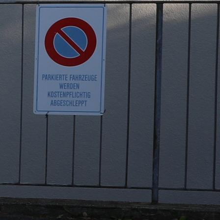 
|
Simple Image Signal Processing using Global Context Guidance
Omar Elezabi, Marcos V. Conde, Radu Timofte IEEE International Conference on Image Processing (ICIP), 2024 arXiv / GitHub First, we propose a novel module that can be integrated into any neural ISP to capture the global context information from the full RAW images. Second, we propose an efficient and simple neural ISP that utilizes our proposed module. |
|
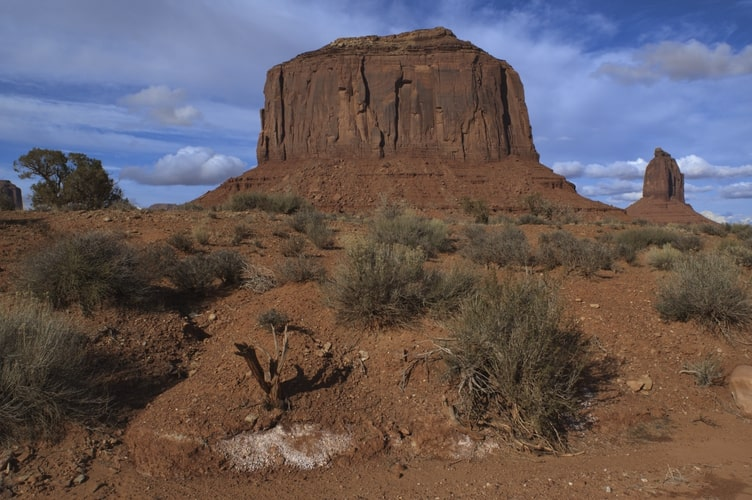 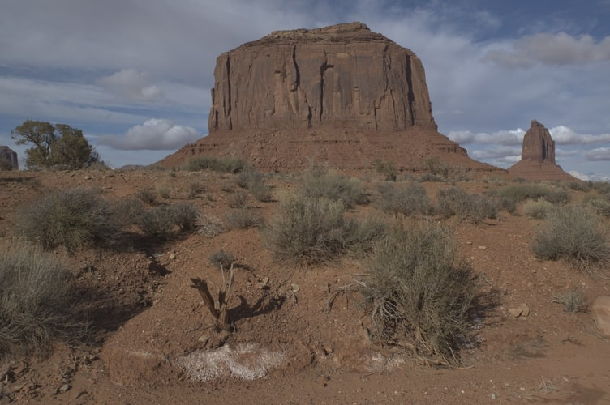 |
NILUT: Conditional Neural Implicit 3D Lookup Tables for Image Enhancement
Marcos V. Conde, Javier Vazquez-Corral , Michael S. Brown, Radu Timofte AAAI, 2024 (23.75% Acceptance rate) project page / arXiv / GitHub & Demo / Video / Easter Egg NILUTs are neural representations of real 3D LUTs for controllable photo-realistic image enhancement and color manipulation. Moreover, a NILUT can be extended to incorporate multiple styles into a single network with the ability to blend styles implicitly. |
|
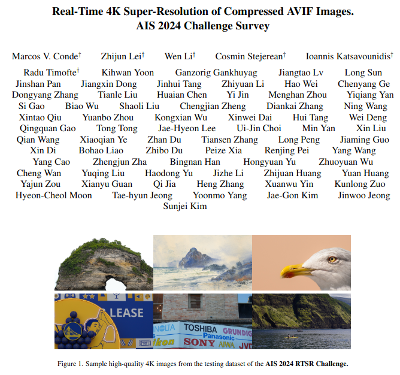 |
Real-Time 4K Super-Resolution of Compressed AVIF Images. AIS 2024 Challenge Survey
Marcos V. Conde, Zhijun Lei, Wen Li, Cosmin Stejerean, Ioannis Katsavounidis, Radu Timofte CVPR Workshop, 2024 arXiv / GitHub Collaboration with Meta. This paper introduces a novel benchmark as part of the AIS 2024 Real-Time Image Super-Resolution (RTSR) Challenge, which aims to upscale compressed images from 540p to 4K resolution (4x factor) in real-time on commercial GPUs. The images are compressed using the modern AVIF codec, instead of JPEG. |
|
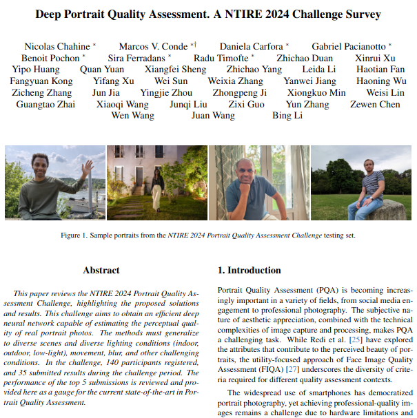 |
Deep Portrait Quality Assessment. A NTIRE 2024 Challenge Survey
Nicolas Chahine, Marcos V. Conde, Daniela Carfora, Gabriel Pacianotto, Benoit Pochon, Sira Ferradans, Radu Timofte CVPR Workshop, 2024 arXiv / GitHub Collaboration with DXOMARK. This paper reviews the NTIRE 2024 Portrait Quality Assessment Challenge, highlighting the proposed solutions and results. This challenge aims to obtain an efficient deep neural network capable of estimating the perceptual quality of real portrait photos. |
|
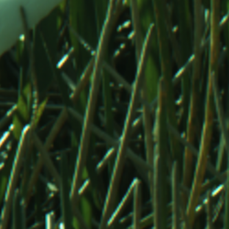 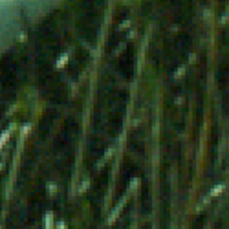 |
Deep RAW Image Super-Resolution. A NTIRE 2024 Challenge Survey
Marcos V. Conde, Florin Vasluianu, Radu Timofte CVPR Workshop, 2024 arXiv / GitHub New methods for RAW Super-Resolution could be essential in modern Image Signal Processing (ISP) pipelines, however, this problem is not as explored as in the RGB domain. The goal of this challenge is to upscale RAW Bayer images by 2x, considering unknown degradations such as noise and blur. |
|
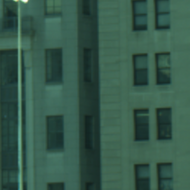 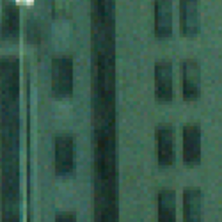 |
BSRAW: Improving Blind RAW Image Super-Resolution
Marcos V. Conde, Florin Vasluianu, Radu Timofte WACV, 2024 arXiv / cvf Proceedings / GitHub We advance RAW sensor images up-scaling (Super-Resolution). We explore diverse image degradations (e.g. Noise, Blur) to emulate a low-resolution RAW image, and we train a neural network to upsample it. |
|
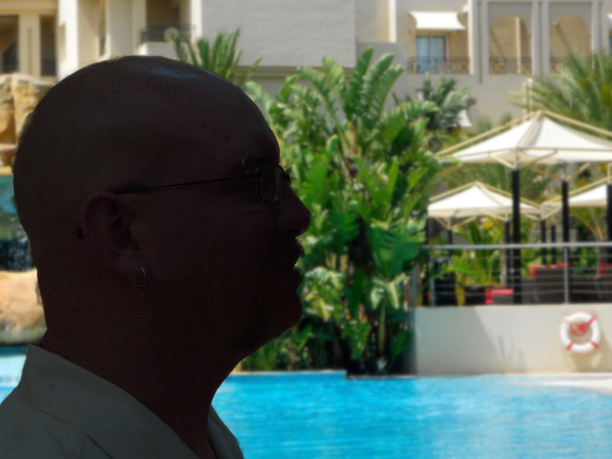 |
Efficient multi-lens bokeh effect rendering and transformation
Tim Seizinger*, Marcos V. Conde*, Manuel Kolmet, Tom E Bishop, Radu Timofte CVPR Workshop, 2023 paper / cvf Proceedings / GitHub EBokehNet, an efficient state-of-the-art solution for Bokeh effect transformation and rendering. We can render Bokeh from all-in-focus images, or transform the Bokeh of one lens to the effect of another lens without harming the sharp foreground in the image. |
|
|
Towards Real-Time 4K Image Super-Resolution
Eduard Zamfir, Marcos V. Conde, Radu Timofte CVPR Workshop, 2023 paper / cvf Proceedings / GitHub The paper presents an exhaustive study of baseline methods for real-time image SR. The methods allow 60 FPS and even 120 FPS. |
|
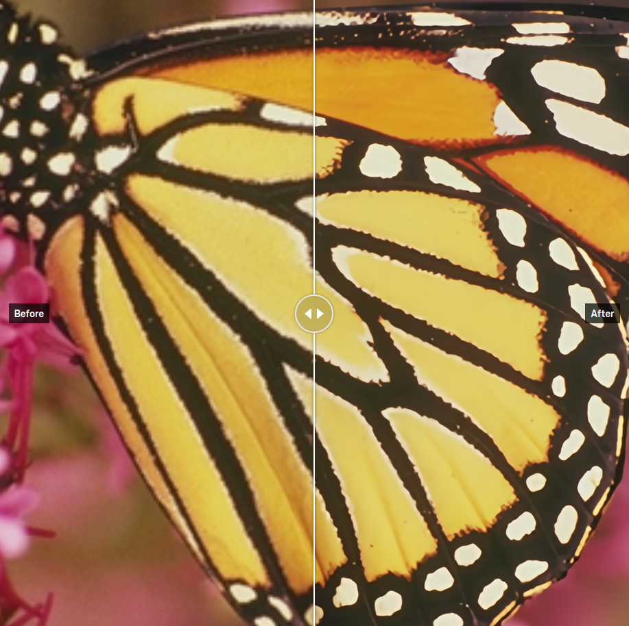 |
Efficient Deep Models for Real-Time 4K Image Super-Resolution. NTIRE 2023 Benchmark and Report
Marcos V. Conde, Eduard Zamfir, Radu Timofte CVPR Workshop, 2023 paper / cvf Proceedings / GitHub The paper gauges the state-of-the-art methods for real-time 4K upscaling using our new dataset and benchmark protocol. Ovr 100 participants joined the challenge and 15 teams proposed diverse solutions. The methods allow 60 FPS and even 120 FPS on regular GPUs. |
|
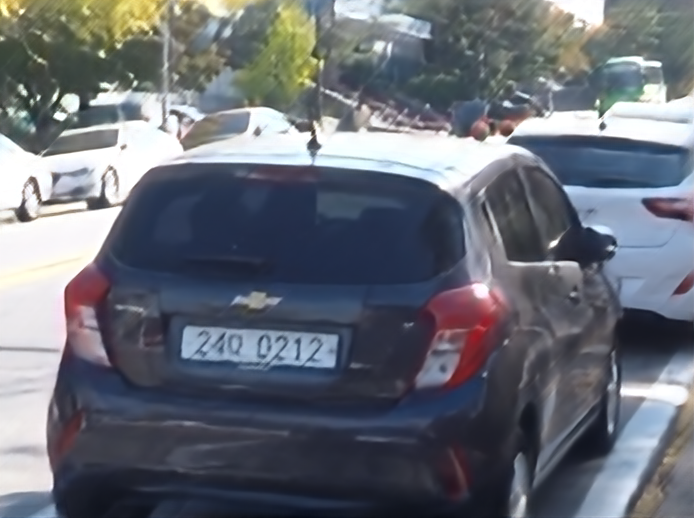 |
Perceptual Image Enhancement for Smartphone Real-Time Applications
Marcos V. Conde, Florin Vasluianu, Javier Vazquez-Corral, Radu Timofte WACV, 2023 (Oral Presentation, Spotlight) arXiv / cvf Proceedings / GitHub We propose LPIENet, a lightweight network for perceptual image enhancement, with the focus on deploying it on smartphones. The model was tested for image denoising, deblurring, and HDR correction. |
|
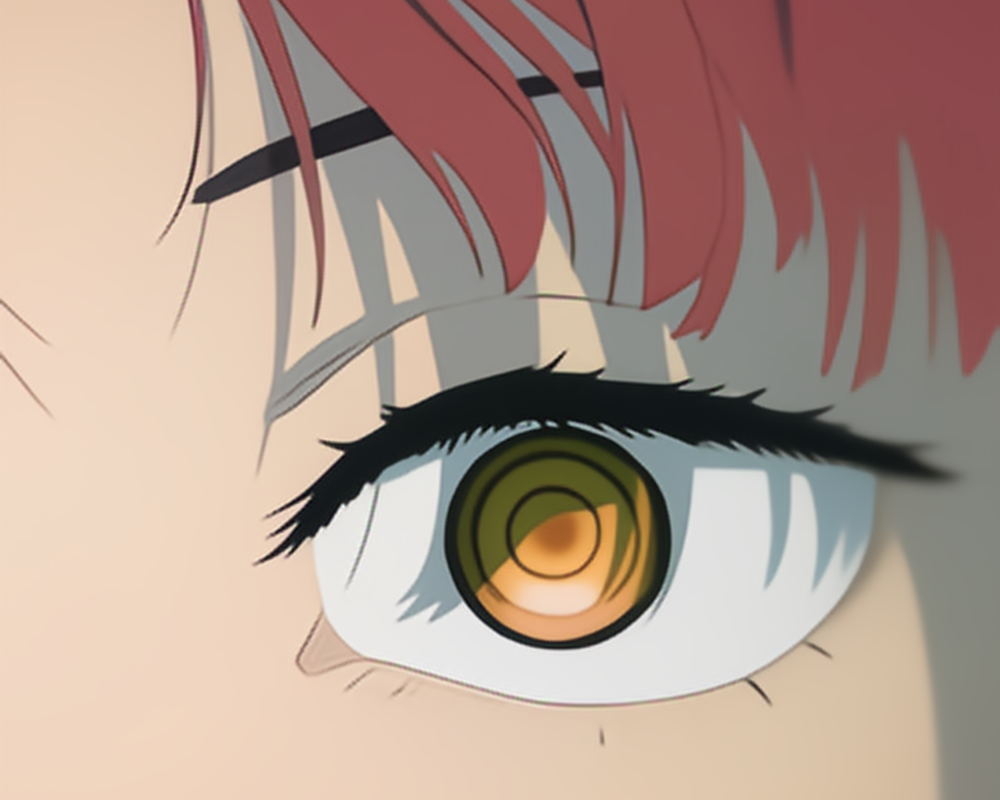 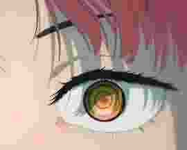 |
Swin2SR: SwinV2 Transformer for Compressed Image Super-Resolution and Restoration
Marcos V. Conde, Ui-Jin Choi, Maxime Burchi, Radu Timofte ECCV Workshop , 2022 arXiv / eccv Proceedings / GitHub / Demo (3M runs!) Super-resolution of compressed images using transformers. We use the Swin Transformer V2, to improve SwinIR for image super-resolution, and in particular, the compressed input scenario. Using this method we can tackle the major issues in training transformer vision models, such as training instability, resolution gaps between pre-training and fine-tuning. |
|
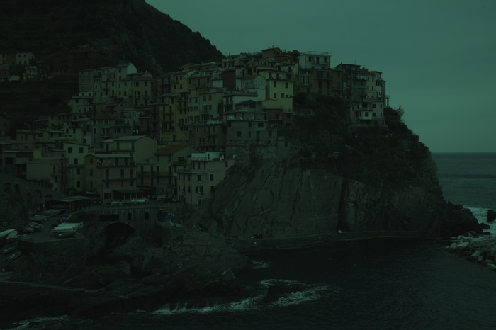 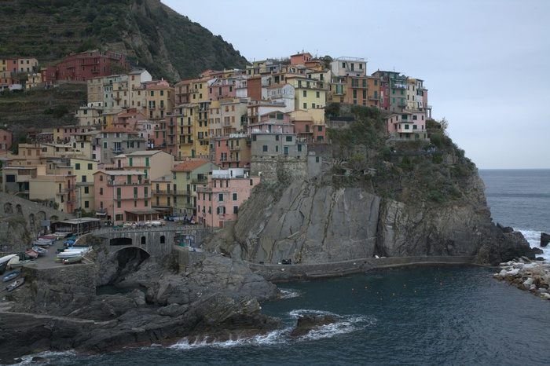 |
Reversed Image Signal Processing and RAW Reconstruction
Marcos V. Conde, Radu Timofte, et al. ECCV Workshop , 2022 arXiv / eccv Proceedings / GitHub This paper introduces the AIM 2022 Challenge on Reversed Image Signal Processing and RAW Reconstruction. We aim to recover raw sensor images from the corresponding RGBs without metadata and, by doing this, "reverse" the ISP transformation. |
|
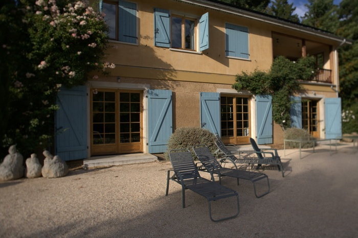 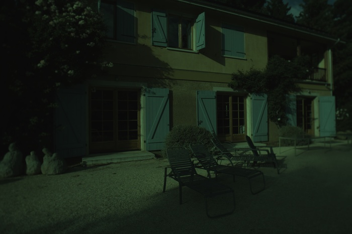 |
Model-Based Image Signal Processors via Learnable Dictionaries
Marcos V. Conde, Steven McDonagh, Matteo Maggioni , Aleš Leonardis, Eduardo Pérez-Pellitero AAAI, 2022 (Oral Presentation, Spotlight) project page / GitHub / arXiv / Poster Hybrid model-based and data-driven approach for modelling ISPs using learnable dictionaries. We explore RAW image reconstruction and improve downstream tasks like RAW Image Denoising via raw data augmentation-synthesis. |
|
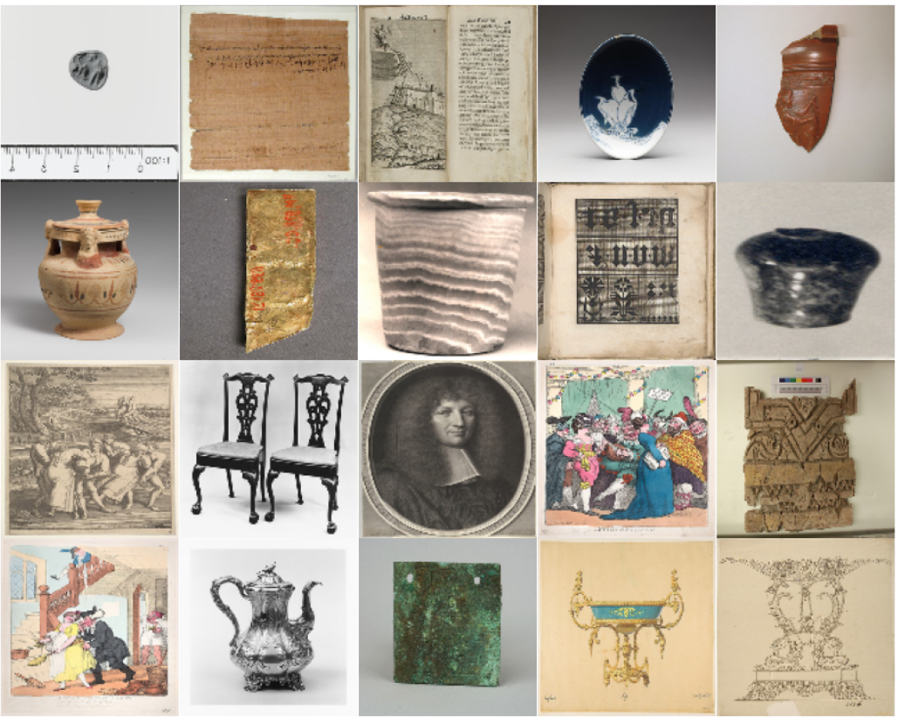 |
CLIP-Art: Contrastive Pre-Training for Fine-Grained Art Classification
Marcos V. Conde, Kerem Turgutlu CVPR Workshop, 2021 arXiv / cvpr Proceedings / GitHub / Kaggle We were one of the 1st attempts to use CLIP (Contrastive Language-Image Pre-Training) for training a neural network on a variety of art images and descriptions, being able to learn directly from raw descriptions about images, or if available, curated labels. |
Academic ServiceReviewer: Outstanding Reviewer at ECCV 2024. CVPR 2022-2026, ECCV 2022-2026, ICCV 2023-2025, IEEE Transactions on Image Processing, IEEE Transactions on Computational Imaging, IEEE Transactions on Pattern Analysis and Machine Intelligence Workshops: AIM 2025 ICCV / NTIRE 2025 CVPR / AIM 2024 ECCV / AI for Streaming (AIS 2024) CVPR / NTIRE 2024 CVPR / VQEG 2023 / NTIRE 2023 CVPR / AIM 2022 ECCV |
Other Projects |
|
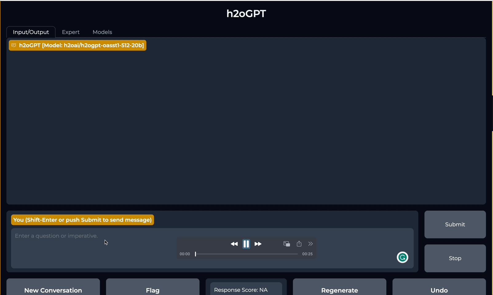 |
H2O Open Ecosystem for LLMs
We introduce a complete open-source ecosystem for developing and testing LLMs.
The goal of this project is to boost open alterna- tives to closed-source approaches.
|

|
Motion Prediction for Autonomous Driving
We proposed multiple methods for motion prediction in Autonomous Driving.
The methods were presented at CVPR Workshops, ICRA, and IEEE Transactions on Intelligent Transportation Systems (T-ITS, Q1, IF:8.5).
|

|
Event-Based Eye Tracking - AIS Challenge CVPR 2024
This survey reviews the AIS 2024 Event-Based Eye Tracking (EET) Challenge. The task of the challenge focuses on processing eye movement recorded with event cameras and predicting the pupil center of the eye.
|
|
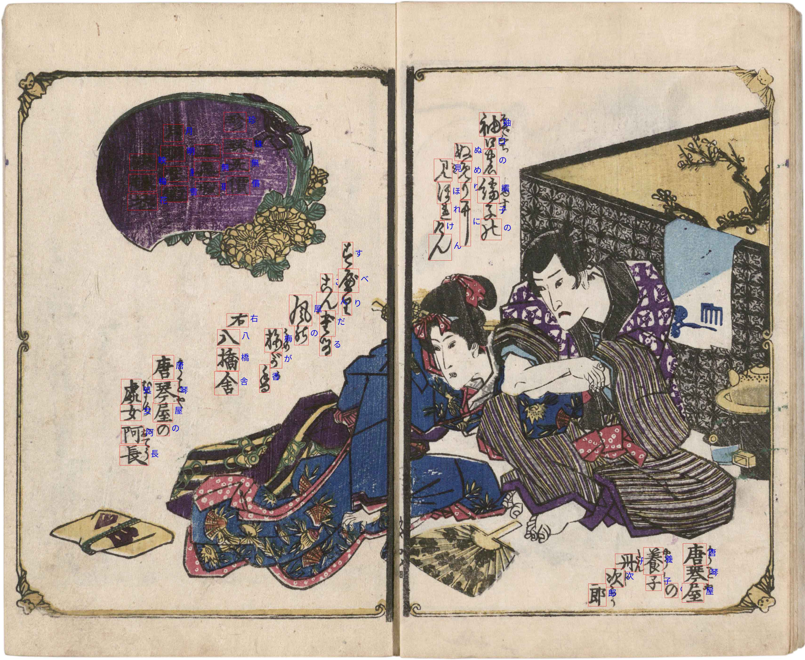 |
Kuzushiji Recognition (Nov. 2019)
I was invited by Japan’s National Institute of Informatics (NII) and ROIS-DS Center for Open Data in the Humanities (CODH)
to present a novel solution for the Kuzushiji Recognition Challenge
at the Japanese Culture and AI Symposium 2019 in Tokyo.
|
{kind=link}
{kind=link}
{kind=link}
{kind=link}